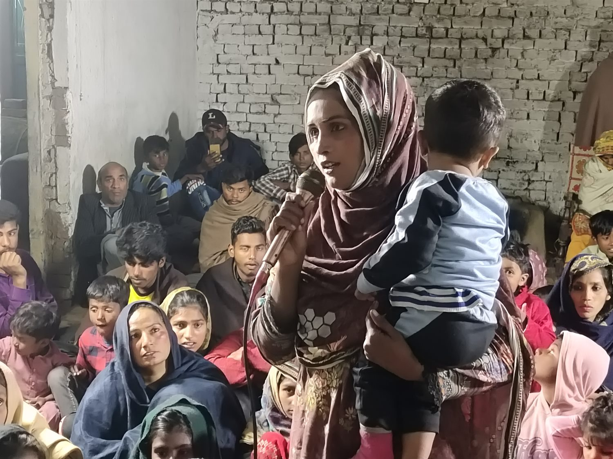
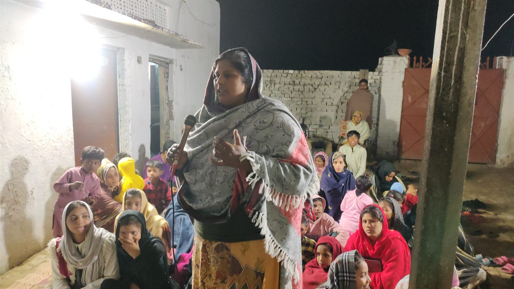
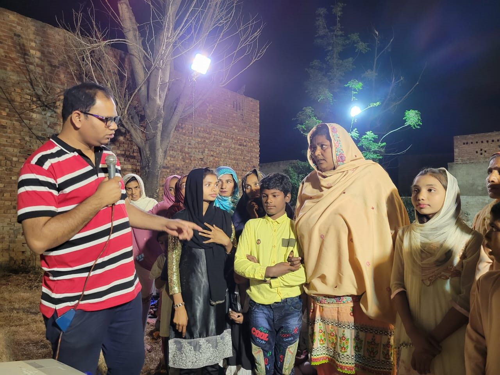
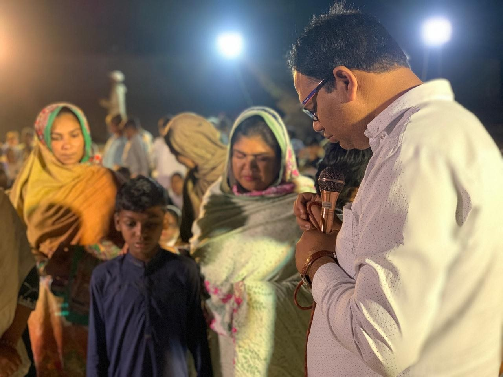
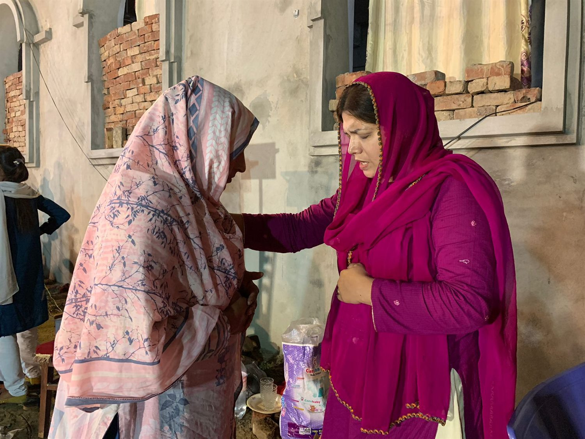
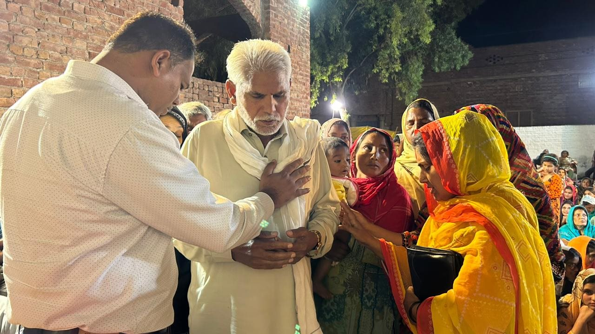

The Will of the Father Organization · Lahore, Pakistan
Prayer, hope, and encouragement
We pray with people for healing, deliverance, and encouragement, trusting God and giving thanks for the testimonies people share. Prayer is part of our care for individuals and families across the communities we serve.
See our photosMinistry in action
A look at our work.
These photographs show gatherings and activities from our ministry in Pakistan.






Pray · Serve · Give
Join us in serving
our neighbors.
For prayer requests, ministry information, or donation instructions, contact our team.